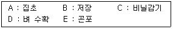

축산기사 (2019-03-03 기출문제)
1과목: 가축육종학
1. Mendel 법칙과 가장 관계가 없는 것은?
- 우열의 법칙
- 분리의 법칙
- 독립의 법칙
- 순수의 법칙
(정답률: 91%)

2. 다음 중 돼지에서 3품종간 교배시 잡종강세의 강도가 가장 큰 것은?
- 이유시 한배새끼의 전체 체중
- 생존자돈의 생시 체중
- 1복당 자돈의 총수
- 체중 100kg 도달 일 수
(정답률: 58%)
3. 다음 중 돼지 경제 형질의 유전력이 가장 낮은 것은?
- 복당 산자수
- 체장
- 사료효율
- 이유후 일당증체량
(정답률: 75%)
4. 다음 중 고온에 견디는 힘이 강하여 열대나 아열대 지방에서 가장 많이 사육되는 소의 품종은?
- Angus 종
- Hereford 종
- Brahman 종
- Charolais 종
(정답률: 73%)
5. 가축 후 후대검정의 정확도를 높이기 위한 방법이 아닌 것은?
- 검정하는 환경요인의 영향을 다양하게 해주어야 한다.
- 후대검정에 배정되는 암가축의 능력을 고르게 한다.
- 후대검정되는 자손들을 가능한 여러 곳에서 검정한다.
- 후대검정되는 자손의 수를 많게 한다.
(정답률: 77%)
6. 닭의 산란강도와 같은 의미가 아닌 것은?
- 산란지수
- 일계(日鷄)산란율
- 연속 산란일수
- 취소성
(정답률: 78%)
7. 다음 중 소에 있어서 2배체(Diploid) 상태에서의 염색체 수로 가장 옳은 것은?
- 35개
- 50개
- 60개
- 90개
(정답률: 80%)
8. 다음 중 유전상관이 부(負)의 관계인 형질들에 해당하는 것으로 가장 옳은 것은?
- 닭의 산란수와 초산일령
- 사료섭취량과 소의 체중
- 돼지의 체중과 등지방층 두께
- 닭의 체중과 난중
(정답률: 57%)
9. 돼지의 능력 검정시, 검정개시체중이 32kg이었고 검정종료체중이 107kg이었다. 검정기간 동안의 사료 섭취량은 210kg 이었으며 검정에 소요된 기간은 100일 이었다면 이 돼지의 1일 평균 증체량은?
- 0.32 kg
- 0.60 kg
- 0.75 kg
- 0.90 kg
(정답률: 79%)
10. 다음 중 한우 발육능력과 거리가 가장 먼 것은?
- 고기의 연도
- 이유시 체중
- 12개월령 체중
- 일당증체량
(정답률: 83%)
11. 육종가에 대한 설명으로 틀린 것은?
- 가축의 육종가는 상가적 유전형가의 총합이다.
- 가축의 육종가는 전달능력의 2배이다.
- 가축의 육종가는 그 가축의 종축으로서의 가치를 나타낸다.
- 육종가의 계산은 반복력을 곱하여 구한다.
(정답률: 63%)
12. 유전자들이 누적된 작용역가의 크기에 따라 형질의 표현정도가 달라지는 경우의 유전자를 무엇이라 하는가?
- 복다유전자
- 열성유전자
- 중복유전자
- 보족유전자
(정답률: 62%)
13. 다음 중 닭에서 자웅 감별에 이용되는 반성유전자가 아닌 것은?
- 만우성(K) 유전자
- 흑색(C) 유전자
- 횡반(B) 유전자
- 은색(S) 유전자
(정답률: 47%)
14. 영구환경분산이 10, 일시적환경분산이 20, 표현형분산이 50 이면 반복력은?
- 0.1
- 0.2
- 0.6
- 0.8
(정답률: 63%)
15. 다음 중 육우 경제형질의 유전력이 가장 높은 것은?
- 수태율
- 분만간격
- 생시체중
- 배장근 단면적
(정답률: 80%)
16. 다음 중 젖소에서 20~30%의 유전력을 갖는 경제형질은?
- 번식능력
- 사료효율
- 비유량
- 단백질률
(정답률: 62%)
17. 가축의 누진교배를 계속할 때 3세대 자손의 유전적 변화로 옳은 것은?
- 개량종 75%, 재래종 25%
- 개량종 87.5%, 재래종 12.5%
- 개량종 93.8%, 재래종 6.2%
- 개량종 96.9%, 재래종 3.1%
(정답률: 68%)
18. 다음 중 가축개량 시 선발의 효과를 크게 하는 방법이 아닌 것은?
- 선발차를 크게 한다.
- 가계선발 위주로 한다.
- 형질의 유전력이 높아야 한다.
- 세대간격을 짧게 해야 한다.
(정답률: 78%)
19. 여러 형질로 종합적으로 고려하여 하나의 점수로 산출한 다음 그 점수에 근거하여 선발하는 방법은?
- 후대검정
- 가계선발
- 순차적 선발법
- 선발지수법
(정답률: 84%)
20. 다음 중 분산에 대한 설명으로 가장 옳은 것은?
- 분산이 클수록 개체간의 차이가 적다.
- 분산이 클수록 평균과의 차이가 적어진다.
- 분산이 클수록 평균과의 차이가 많아진다.
- 분산이 클수록 반드시 측정 개체수는 많아진다.
(정답률: 76%)
2과목: 가축번식생리학
21. 다음 중 임신을 유지시키는 호르몬으로 옳은 것은?
- 옥시토신
- 안드로겐
- 난포자극호르몬
- 프로게스테론
(정답률: 75%)
22. 자궁의 형태가 쌍각자궁인 동물은?
- 소
- 돼지
- 토끼
- 말
(정답률: 78%)
23. 다음 중 돼지의 배란시기로 옳은 것은?
- 발정 개시 직후
- 발정 개시 후 10~20시간
- 발정 개시 후 35~45시간
- 발정 종류 직후
(정답률: 44%)
24. 성선자극 호르몬인 난포자극호르몬(FSH)과 황체형성호르몬(LH)의 생리작용과 유사한 태반 호르몬을 바르게 연결한 것은?
- FSH – GnRH, LH - hCG
- FSH – eCG, LH - GnRH
- FSH – eCG, LH - hCG
- FSH – hCG, LH – eCG
(정답률: 59%)
25. 다음 중 계절 번식을 하는 동물은?
- 소
- 양
- 돼지
- 토끼
(정답률: 77%)
26. 황체형성 호르몬의 작용과 직접적 관계가 가장 적은 것은?
- 배란유발
- 황체형성
- 웅성 호르몬 분비
- 분만
(정답률: 55%)
27. 가축의 교배 및 발정에 관한 설명으로 옳지 않은 것은?
- 돼지는 자궁경관 내에 사정한다.
- 소는 정액을 질 내 깊은 곳에 사정한다.
- 소의 배란은 발정이 진행되는 과정에서 일어난다.
- 소의 정자 다수가 난관 상부까지 도달하는 시간은 4~8시간이다.
(정답률: 60%)
28. 웅성 생식기에 관련된 설명 중 옳지 않은 것은?
- 웅성 생식기관은 정소, 정소상체, 음낭, 정관으로 구성되어 있다.
- 정소는 정자를 생산하고 호르몬을 분비한다.
- 정소상체 미부보다는 두부에 있는 정자에서 수정능력이 높게 나타난다.
- 정소상체는 정자의 운반, 농축, 성숙, 저장의 기능을 가지고 있다.
(정답률: 66%)
29. 복제동물 생산에 있어서 핵이식의 과정이 아닌 것은?
- 수핵난자와 공핵배의 준비
- 핵이식과 세포융합
- 핵이식란의 비활성화
- 핵이식란의 배양과 이식
(정답률: 78%)
30. 유방의 실질조직인 유선 세포에서 분비된 유즙의 이동경로를 바르게 설명한 것은?
- 유선포 → 유선엽 → 유선관 → 유두조 → 유두관
- 유선엽 → 유선질 → 유선관 → 유두조 → 유두관
- 유선관 → 유선엽 → 유선조 → 유두조 → 유두관
- 유선포 → 유선관 → 유선엽 → 유두조 → 유두관
(정답률: 66%)
31. 포유동물에서의 수정과정 중 난자의 활성화에 관련이 없는 것은?
- 난세포질내 칼슘농도의 감소
- 표층과립의 세포외유출과 다정자침입의 방지
- 제2감수분열의 재개
- 세포골격의 변화
(정답률: 35%)
32. 포유동물에서 난자와 정자가 만나서 수정이 이루어지는 부위와 수정란이 발달하여 착상하는 부위는?
- 수정부위 – 난관, 착상부위 - 자궁경관
- 수정부위 – 자궁각, 착상부위 - 난관
- 수정부위 – 자궁경관, 착상부위 - 난관
- 수정부위 – 난관, 착상부위 – 자궁각
(정답률: 61%)
33. 다음 중 성성숙이 가장 느린 품종은?
- Ayrshire
- Holstein
- Guernsey
- Jersey
(정답률: 48%)
34. 돼지에 있어서 난자가 배란에서부터 난관으로 수송되는 시간은 얼마인가?
- 24시간
- 48시간
- 66시간
- 72시간
(정답률: 61%)
35. 다음 중 동물종에서 공통적으로 발현되는 외부적 발정징후가 아닌 것은?
- 정서 불안
- 식욕 증가
- 외음부 종창
- 승가 허용
(정답률: 75%)
36. 소에 있어서 난자의 수정능 보유시간은 배란 후 몇 시간인가?
- 1시간 이내
- 10시간 이내
- 20 ~ 24 시간
- 48 시간 이후
(정답률: 73%)
37. 유선의 분비상피세포에서 합성된 유즙성분이 유선포강내로 방출되는 경로가 아닌 것은?
- 세포외유출 및 이출분비
- 원형질막통과 차단
- 경세포운반
- 측세포운반
(정답률: 64%)
38. 포유동물에 주로 발생되는 브루셀라병에 대한 설명으로 옳은 것은?
- 급성 또는 만성전염병으로 유산을 일으킨다.
- 급성 또는 만성전염병으로 분만 시 후산 정체를 일으킨다.
- 고질적인 생식기의 유전병으로 유산을 일으킨다.
- 만성적인 생식기의 유전병으로 분만 시 후산 정체를 일으킨다.
(정답률: 67%)
39. 다음 중 비유 유지와 관련이 없는 호르몬은?
- 바소프레신
- 프롤락틴
- 성장호르몬
- 부신피질자극호르몬
(정답률: 57%)
40. 소의 분만과정에서 태반만출기에 소요되는 평균시간은?
- 1시간
- 2 ~ 4시간
- 6 ~ 12시간
- 18 ~ 24시간
(정답률: 61%)
3과목: 가축사양학
41. 조단백질 함량이 9%인 옥수수와 조단백질 함량이 33%인 농후사료를 이용하여 조단백질 함량이 15%인 육성비육우 사료를 만들려고 한다면, 옥수수와 농축사료의 배합비율은?
- 33(옥수수) : 9(농축사료)
- 9(옥수수) : 33(농축사료)
- 18(옥수수) : 6(농축사료)
- 6(옥수수) : 18(농축사료)
(정답률: 65%)
42. 포유자돈의 특성으로 틀린 것은?
- 포유자돈은 모체이행 항체를 태반을 통해 전달받지 못하여 면역적으로 미성숙하다.
- 소화와 흡수 기능이 미숙한 상태로, 유당분해효소(lactase)를 포함한 여러 가지 소화효소의 분비가 왕성하다.
- 출생 직후 포유자돈의 체온은 39℃이지만 체온유지에 필수적인 등지방을 비롯한 체지방의 축적이 부족한 상태이다.
- 포유자돈은 출생 초기에는 주위지각능력이 낮고 운동능력이 충분히 발달되지 않아서 모돈에 의한 압사 발생률이 높다.
(정답률: 65%)
43. 초유가 일반 우유에 비하여 함유량이 낮은 성분은?
- 유당
- 면역글로블린
- 칼슘
- 단백질
(정답률: 72%)
44. 가축의 사료 중 비중이 가장 무거운 것은?
- 비육우
- 착유우
- 비육돈
- 산란계
(정답률: 50%)
45. 육우의 산육능력에 영향을 주는 요인 중 사료섭취량 감소와 가장 거리가 먼 것은?
- 사료중 가소화에너지 농도가 낮을 때
- 환경온도가 너무 높을 때
- 음수량이 부족할 때
- 사료중 인(P)함량이 부족할 때
(정답률: 54%)
46. 육우사료에 결핍될 경우 그래스 테타니(grass tetany)를 유발하는 광물질은?
- 칼륨
- 황
- 마그네슘
- 셀레늄
(정답률: 64%)
47. 결핍 시 산란계의 산란율과 부화율저하, 돼지의 피부각질화와 백내장 현상 등의 증세를 유발하는 수용성 비타민은?
- 티아민(Thiamine)
- 리보플라빈(Riboflavin)
- 나이아신(Niacin)
- 바이오틴(Biotin)
(정답률: 46%)
48. 다음 중 반추가축의 조단백질원으로 특성이 다른 하나는?
- 라이신
- 요소
- 뷰렛
- 암모니아
(정답률: 55%)
49. 다음 중 육우의 비육밑소로 선발 시 가장 적절한 것은?
- 피부가 두꺼운 것
- 갈비뼈가 충분히 개장되고 간격이 넓은 것
- 요각폭이 좁고 경사진 것
- 엉덩이가 넓고 길며 경사가 심한 것
(정답률: 75%)
50. 사료로 섭취한 칼슘(Ca)과 인(P)이 흡수를 증가시키는데 관여하는 비타민은?
- 비타민 A
- 비타민 B
- 비타민 C
- 비타민 D
(정답률: 58%)
51. 육우를 거세할 때 나타나는 현상이 아닌 것은?
- 체내 지방의 축적량을 증가시킨다.
- 남성적 성향의 제거로 인해 운동량을 감소시킨다.
- 공격성을 감소시킴으로서 관리의 수월성을 도모할 수 있다.
- 정소를 제거함으로 체내 에스트로겐의 상대적인 함량을 감소시킨다.
(정답률: 71%)
52. 다음 주 반추가축에서 에너지가(價)가 가장 낮은 것은?
- 대사에너지
- 정미에너지
- 가소화에너지
- 총에너지
(정답률: 66%)
53. 동물복지문제가 대두되면서 수송아지의 스트레스를 최소화한다는 측면에서 권장되고 있는 거세방법은?
- 고무링법
- 무혈거세법
- 화학적 거세
- 외과적 수술법
(정답률: 52%)
54. 단백질 원료 사료가 아닌 것은?
- 호마박
- 어분
- 타피오카
- 대두박
(정답률: 73%)
55. 반추가축의 사료 내 탄수화물 성분 중에서 가장 소화되기 어려운 것은?
- 헤미셀룰로오스
- 전분
- 리그닌
- 셀룰로오스
(정답률: 59%)
56. 다음 중 체내에서 완전 산화할 때 대사수 생성량이 가장 많은 것은?
- 1g의 glycerol
- 1g의 glucose
- 1g의 stearic acid
- 1g의 glutamic acid
(정답률: 41%)
57. 모돈 사육 시 영양소 요구량이 가장 높은 시기는?
- 임신전기
- 임신후기
- 포유기
- 종부기
(정답률: 57%)
58. 옥수수 과다 섭취 시 나이아신(niacin) 결핍증이 유발되는 원인으로 틀린 것은?
- 히스티딘(histidine)의 함량이 많아져 나이아신(niacin)으로 전변되는 양이 적음
- 옥수수에는 나이아신(niacin)이 결핍되고 불용성 형태로 존재하기 때문
- 트립토판(tryptophan)의 함량이 낮아져 나이아신(niacin)으로 전변되는 양이 적음
- 루이신(leucine)의 함량이 많아져 나이아신(niacin)의 생성과정을 억제함
(정답률: 37%)
59. 가소화영양소총량(TDN)의 계산 공식에 해당하는 것은?
- 가소화탄수화물(%) + 가소화조단백질(%) + 가소화조지방(%)
- 가소화탄수화물(%) + 가소화조단백질(%) + 가소화조지방(%) × 2.25
- 가소화탄수화물(%) + 가소화조지방(%) + 가소화조단백질(%) × 2.25
- 가소화조단백질(%) + 가소화조지방(%) + 가소화조섬유(%) + 가소화가용무질소물(%)
(정답률: 72%)
60. 염산(HCl)을 분비하는 닭의 소화기관은?
- 소낭
- 선위
- 근위
- 소장
(정답률: 62%)
4과목: 사료작물학 및 초지학
61. 다음 중 일반적인 옥수수 사일리지 제조를 위한 재료의 적정 수분 함량으로 가장 적절한 것은?
- 50 ~ 55%
- 56 ~ 60%
- 65 ~ 70%
- 75 ~ 80%
(정답률: 67%)
62. 다음 중 뿌리가 얕아서 가뭄에 약하지만 추위에 강하여 고랭지에 가장 적절한 것은?
- 오차드그라스
- 톨페스큐
- 티머시
- 페레니얼라이그라스
(정답률: 48%)
63. 톨페스큐의 주요 병으로 감염되면 환경에 대한 저항성은 증가하나 가축에는 나쁜 영향을 주는 병은?
- 탄저병
- 엔도파이트 진균병
- 줄무늬마름병
- 맥각병
(정답률: 43%)
64. 다음 중 사일리지의 숙성에 필요한 적정 저장기간으로 가장 적절한 것은?
- 3 ~ 4일
- 2 ~ 3주
- 30 ~ 40일
- 3 ~ 4개월
(정답률: 55%)
65. 다음 중 화본과 목초의 일반적 특징에 대한 설명으로 가장 적절하지 않은 것은?
- 근계는 섬유모양의 수엄뿌리로 되어 있다.
- 줄기는 대체로 속이 비어있고, 뚜렷한 마디를 가진다.
- 잎은 복합엽으로 엽맥은 그물모양으로 되어 있다.
- 열매는 씨방벽에 융합되어 있는 하나의 종자를 가진다.
(정답률: 65%)
66. 다음 중 건초의 조제와 이용에 대한 설명으로 가장 거리가 먼 것은?
- 풀이 없거나 부족한 계절에 우수한 조사료를 공급할 수 있다.
- 일반적으로 사일리지로 만드는 것보다 포장손실이 적다.
- 생초나 사일리지에 비하여 운반과 취급이 쉬운 편이다.
- 어린 가축에게 양질의 건초급여는 설사방지 등 정장효과가 있다.
(정답률: 56%)
67. 다음 중 북방형 목초의 하고에 가장 많은 영향을 미치는 것은?
- 고온건조
- 생육기의 전환
- 근류의 분해
- 바이러스 병의 발생
(정답률: 70%)
68. 다음 중 소화가 쉬운 성분들로만 구성된 것은?
- 단백질, 큐틴, 가용성 탄수화물
- 단백질, 가용성 탄수화물, 유기산
- 펩틴, 전분, 실리카
- 전분, 리그닌, 유기산
(정답률: 59%)
69. 생볏짚 원형곤포사일리지 제조의 작업 단계가 올바르게 나열된 것은?

- D → A → E → C → B
- D → E → A → C → B
- D → A → C → E → B
- D → C → A → E → B
(정답률: 61%)
70. 다음 중 목초의 파종시기로서 가장 적절하지 않은 경우는?
- 춘파는 해빙 직후가 적당하다.
- 추파는 첫서리 내리기 약 40일전에 한다.
- 산지에서는 춘파보다 추파가 동해의 피해를 줄일 수 있다.
- 우리나라 평지에서는 잡초와의 경합을 고려해서 추파를 권장하고 있다.
(정답률: 48%)
71. 답리작 사료작물 재배의 장점에 대한 설명으로 가장 적절하지 않은 것은?
- 토양 중의 유기물 함량을 감소시킨다.
- 토양침식을 감소시킨다.
- 논에서 가축의 사료를 생산할 수 있다.
- 수익을 올릴 수 있는 윤작체계를 확립시킬 수 있다.
(정답률: 58%)
72. 귀리의 생육에 가장 알맞은 토양의 pH는?
- 5.6 ~ 6.2
- 6.8 ~ 7.5
- 7.6 ~ 7.9
- 8.0 ~ 8.3
(정답률: 41%)
73. 다음 중 사일리지의 분석결과에 대한 설명으로 가장 적절한 것은?
- 유산함량이 높으면 암모니아태 질소함량도 높다.
- 사일리지의 pH가 높으면 낙산함량은 낮다.
- 사일리지의 pH가 낮으면 암모니아태 질소함량도 낮다.
- 낙산함량이 높으면 기호성과 채식량도 증가한다.
(정답률: 46%)
74. 남방형이고 아프리카가 원산이며, 열대 및 아열대 지방에 널리 분포하고 있는 사료작물은?
- 버뮤다그라스
- 오차드그라스
- 티머시
- 톨페스큐
(정답률: 54%)
75. 화본과목초에 비해 두과목초에 다량 함유된 양분은?
- 탄수화물
- 지방
- 회분
- 단백질
(정답률: 70%)
76. 다음 중 작부체계 설정 시 고려할 사항과 가장 거리가 먼 것은?
- 생산량
- 사료가치
- 노동력
- 파종량
(정답률: 42%)
77. 수수나 수단그라스를 청예로 먹일 때 청산중독의 위험이 가장 큰 상황은?
- 비가 내린 뒤 수확하였을 때
- 가뭄이 계속되는 동안 수확하였을 때
- 서리가 내린 뒤 열흘 후 수확하였을 때
- 비료기가 소실한 뒤 수확하였을 때
(정답률: 58%)
78. 다음 중 건초의 품질평가 시 고려할 요소로 가장 거리가 먼 것은?
- 발효상태
- 이물질 혼입정도
- 녹색도
- 잎의 비율
(정답률: 58%)
79. 다음 중 초지와 사료작물의 재배의의에 대한 설명으로 가장 거리가 먼 것은?
- 인간이 이용할 수 없는 섬유질 사료로 고급식품을 생산한다.
- 기상생태학적으로 우리나라에 가장 적합한 식생이 목초이다.
- 국토의 균형발전과 잠재적, 식량기지로 이용이 가능하다.
- 반추가축의 정상적인 소화생리에 필수적이다.
(정답률: 52%)
80. 건초조제 시 건조속도 개선을 위해 목초의 줄기를 눌러주며 수확하는 기계는?
- 테더
- 스퀘어 베일러
- 라운드 베일러
- 모어 컨디셔너
(정답률: 59%)
5과목: 축산경영학 및 축산물가공학
81. 모돈을 사육하여 자돈을 생산하고 생산된 자돈을 비육하여 비육돈을 생산·판매하는 경영형태는?
- 종돈생산 경영
- 일관경영
- 번식돈 경영
- 비육돈 경영
(정답률: 59%)
82. 다음 중 축산경영 관련 공식이 틀린 것은?
- 조수익 = 주산물 평가액 + 부산물 평가액
- 단위당생산비 = (전체생산비 – 부산물평가액) ÷ 생산량
- 단위당 순수익 = 단위당 조수익 – 단위당 생산비
- 가족노동보수 = 조수익 – 경영비
(정답률: 55%)
83. 생산비의 기본요건을 설명한 것으로 틀린 것은?
- 생산비는 화폐가액으로 나타내야 한다.
- 생산물을 생산하기 위해서 소비된 것이어야 한다.
- 정상적인 생산활동을 위해 소비된 것이어야 한다.
- 생산비는 투입요소들을 물량으로 나타내야 한다.
(정답률: 55%)
84. 경종농업과 비교할 때 축산 노동력의 특수성으로 옳지 않은 것은?
- 노동력의 계절성은 축산이 경종농업보다 크다.
- 노동력의 이동성은 축산이 경종농업보다 작다.
- 노동력의 다양성은 축산이 경종농업보다 크다.
- 노동력의 지휘곤란성은 축산경영이 경종농업보다 작다.
(정답률: 52%)
85. 다음 중 노동 생산성의 공식은?
- 총생산비용 / 투하노동량
- 투하노동량 / 총생산비용
- 투하노동량 / 총생산량
- 총생산량 / 투하노동량
(정답률: 49%)
86. 다음 중 고정자본재에 속하지 않는 것은?
- 트랙터
- 축사
- 비육돈
- 경산우
(정답률: 67%)
87. 양계경영의 기술진단지표가 아닌 것은?
- 육성률
- 사료요구율
- 유사비
- 난중
(정답률: 53%)
88. 자본재의 평가방법으로 옳은 것은?
- 취득원가법은 자산의 효용이 동일한 유사한 재화를 평가기초로 삼는 방법이다.
- 시가평가법은 매년 얻어지는 순이익을 기초로 하여 평가하는 방법이다.
- 저가평가법은 취득가격과 시가 중 낮은 가격을 기준으로 평가하는 방법이다.
- 추정가평가법은 자산 구입가격과 구입시 소요되는 제반비용을 합산하는 방법이다.
(정답률: 55%)
89. 다음 주 대차대조표 등식은?
- 자산 = 부채 + 자본
- 자본 = 부채 + 자산
- 부채 = 자본 + 자산
- 순이익 = 기수자본 – 기말자본
(정답률: 52%)
90. 경영의 목표를 달성하기 위하여 경영요소의 합리적인 조직이 요구되며, 경영방식의 선택, 노동력 구성과 노동생산성 향상을 위한 축산자본의 집약도가 높아질수록 수익과 비용의 차액이 감소하는 등 수익체감의 법칙이 작용하므로 적정규모의 선택이 필요하다. 다음 중 적정규모와 가장 관계가 깊은 것은?
- 최고 평균생산비
- 최저 평균생산비
- 최저 총생산비
- 최고 한계생산비
(정답률: 39%)
91. 우유류 중 저지방제품의 유지방 함량 범위에 해당하지 않는 것은?
- 0.6%
- 1%
- 2%
- 3%
(정답률: 64%)
92. 발효소시지에 사용되는 스타터 컬쳐에 대한 설명이 틀린 것은?
- 풍미와 외관, 보존성 등을 향상시키기 위해 발효에 직접 필요한 미생물만 별도 배양하여 사용하는 미생물이다.
- 식중독 미생물이 존재하지 않아야 하며 곰팡이도 독성물질을 생성하지 않아야 한다.
- 낮은 pH와 6%의 염용액, 150ppm의 아질산염 존재시에도 생존할 수 있어야 하고, 단백질 및 지방분해효소를 생성해야 한다.
- 주로 Lactobacillus, Pediococcus, Staphylococcus 등이 있다.
(정답률: 49%)
93. 다음 중 Blue cheese 의 제조 시 첨가하는 것은?
- Aspergillus oryzae
- Mucor rouxii
- Penicillium roqueforti
- Rhizipus stolonifer
(정답률: 64%)
94. 사후근육이 숙성되는 과정에서 근원섬유의 구조가 약화되어 연해지는 이유가 아닌 것은?
- Z-line 의 약화
- 경직결합(rigor linkage)의 약화
- connectin의 약화
- H대의 약화
(정답률: 50%)
95. 유가공품 중 가공육류의 유형에 해당하지 않는 것은?(오류 신고가 접수된 문제입니다. 반드시 정답과 해설을 확인하시기 바랍니다.)
- 산양유
- 강화우유
- 유산균첨가우유
- 유당분해우유
(정답률: 65%)
96. 다른 식육에 비하여 돼지고기에 특히 많이 함유된 비타민은?
- 비타민 A
- 비타민 B1
- 비타민 C
- 비타민 E
(정답률: 68%)
97. 소시지의 가열 과정에서 발생하는 지방 분리의 원인이 아닌 것은?
- 지방입자를 둘러쌀 수 있는 염용성 단백질의 양이 부족할 때
- 지방이 과다하게 첨가되어 육단백질이 제대로 감싸지 못할 때
- PSE육과 같이 단백질의 용해성이 나쁜 원료육을 사용할 때
- 천천히 가열처리하거나 저온처리를 할 때
(정답률: 63%)
98. 냉장상태에서 신선육을 호기 상태로 저장할 때 부패를 일으키는 그람음성간균 미생물이 아닌 것은?
- Acinetobacter 속
- Moraxella 속
- Pseudomonas 속
- Lactobacillus 속
(정답률: 55%)
99. 고기의 동결저장에 대한 설명으로 옳은 것은?
- 고기는 0℃에서 100% 동결된다.
- 동결육은 물에 담궈 해동하는 것이 가장 좋다.
- 동결육은 해동과 재냉동을 반복해도 고기 품질은 동일하다.
- 동결 시 생성되는 빙결정(ice crystal)이 클수록 고기조직을 파괴하고 해동 시 육즙(drip)을 유출시킨다.
(정답률: 63%)
100. 버터의 제조 공정 중, 크림의 지방구들이 뭉쳐서 작은 입자를 형성하고, 버터밀크와 분리되도록 일정한 속도로 크림을 휘저어서 기계적으로 지방구에 충격을 주는 공정은?
- Aging
- Churning
- Working
- Salting
(정답률: 64%)